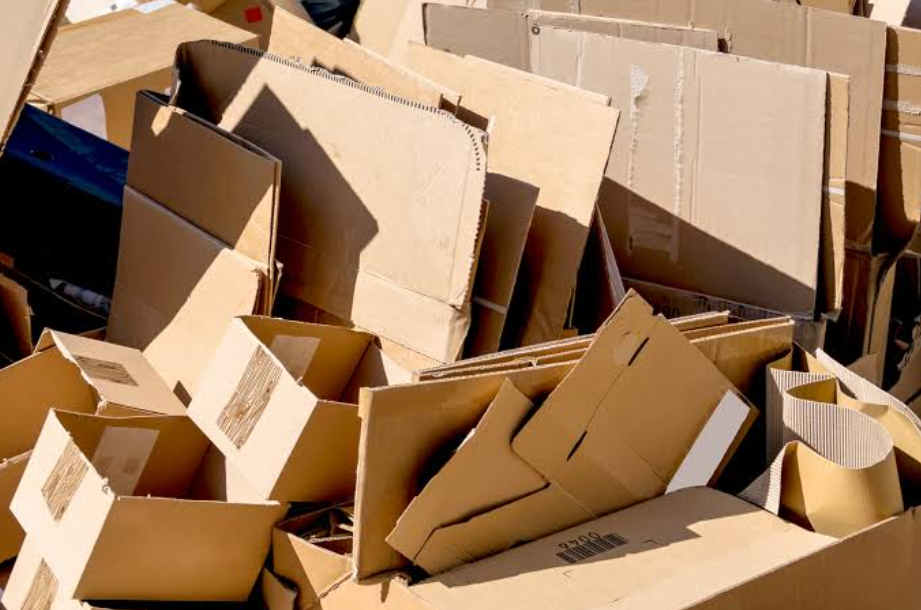

have you received your package yet?
what is happening beneath the surface?
Video source: National Geographic
the ocean is not just water
The ocean is home to millions of living organisms and plays an important role in our planet. However, human activities are causing more and more pollution to enter the ocean. Plastic waste, chemicals, oil, and other forms of garbage can harm marine ecosystems and make the ocean less safe for the animals that depend on it.
When plastic waste reaches the sea, it can remain there for a very long time. Marine animals may mistake plastic for food or become trapped in it. Pollution can also damage coral reefs and affect the quality of the water. This means that the problem does not only affect the ocean itself, but also the living things and communities that depend on it.
what ends up in the ocean?
PLASTIC BOTTLE
COMMONLY RECYCLABLE
CARDBOARD BOX
COMMONLY RECYCLABLE
GLASS BOTTLE
COMMONLY RECYCLABLE
what can we do?
Protecting the ocean does not always require huge actions. Small choices in our daily lives can also help reduce the amount of waste that reaches the environment. We can start by paying attention to what we buy, what we use, and where we throw our waste. When many people make small changes together, those actions can create a bigger positive impact on the ocean and the living things that depend on it.
REDUCE
Try to reduce the amount of single-use items we use every day. Bringing a reusable bottle or bag can help us avoid unnecessary waste.
REUSE
Before throwing something away, think about whether it can be used again. Reusing containers, boxes, and other items can help reduce waste.
RECYCLE
Separate recyclable materials from other waste whenever possible. Recycling allows some materials to be processed and made into new products.
DON'T LITTER
Never leave waste in streets, rivers, beaches, or other natural areas. Throwing waste into the correct bin can help stop it from reaching the ocean.